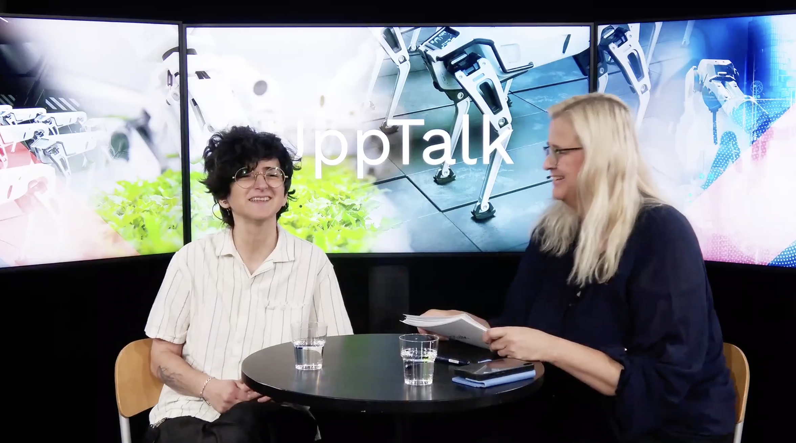
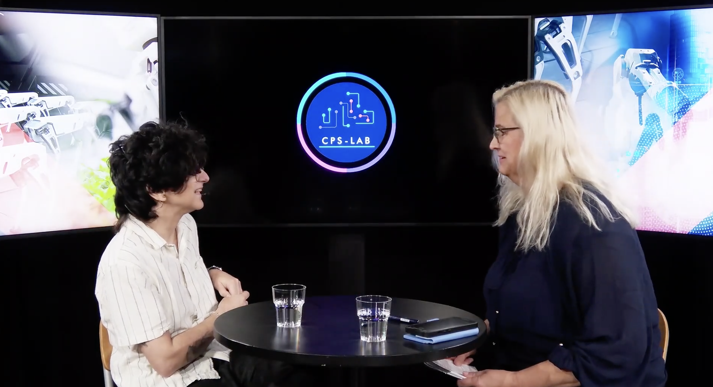
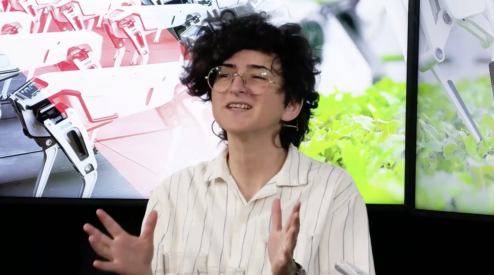
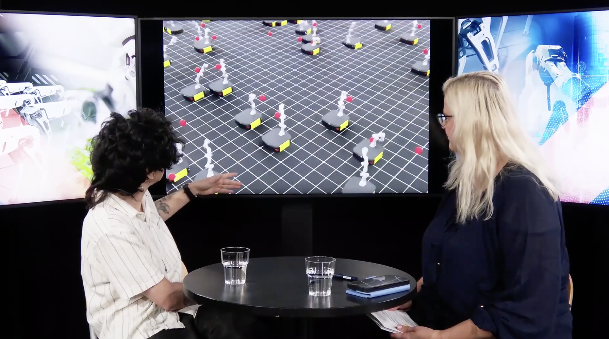

Didem Gurdur Broo Judges the Honda Mobilityland Youth Innovation Awards at the F1 Japanese Grand Prix
Post's content provided by: CPS-Lab Team
We're thrilled to share that our lab director, Dr. Didem Gürdür Broo, attended the 2026 Formula 1 Japanese Grand Prix at the iconic Suzuka Circuit as one of the judges of the Honda Mobilityland Youth Innovation Awards 2026 — an international student innovation competition organized by Honda Mobilityland Corporation.
About the Competition
The competition invited high school and university students from around the world to propose innovative ideas focused on fan travel and fan engagement — with the goal of shaping a more sustainable and engaging future for motorsports. This year's Grand Prix drew an extraordinary crowd of over 110,000 spectators, making it one of the most vibrant backdrops imaginable for a youth innovation showcase.
Featured on F1's Official Account
The event was featured on F1's official X (Twitter) account.
▶ Watch on X (Twitter)
About the Tracks
Students competed across two tracks: the Fan Travel Innovation Challenge, where teams proposed ideas to make the journey to Suzuka Circuit more enjoyable, convenient, and sustainable; and the Fan Engagement Challenge, where teams developed concepts for attracting new audiences to motorsports through online and on-site experiences. Ideas ranged from AR/VR activations and digital storytelling to low-carbon travel solutions and fan zone innovations.
Finalists presented their proposals in Tokyo, and the winning teams from each track were invited to the F1 Japanese Grand Prix — held March 27–29, 2026 at Suzuka Circuit — where they presented on the Fan Zone stage before live audiences.
The Judging Panel
Didem joined a diverse and internationally distinguished panel that included academics, industry leaders, and representatives from Stanford University's international programs. The panel evaluated proposals across multiple dimensions, including social value, feasibility, originality, and industry insight.
In Didem's Own Words
A long-time Formula 1 fan and passionate advocate for nurturing the next generation of innovators, Didem shared her reflections on the experience:
"It was an incredible experience to support the learning and innovative thinking of the students, and I was very impressed by their projects. Being on the stage at Suzuka is not easy to achieve — so I congratulate all of the teams for having the courage and discipline to continuously work on their ideas and polish them to the level of presentation at this event."
Where Research Meets the Real World
This invitation reflects exactly the kind of interdisciplinary engagement at the heart of our lab's mission. Sustainability, human-centered system design, and the role of technology in shaping real-world experiences are themes that run through our research every day. Seeing these themes challenged and explored by the next generation of innovators — in the electrifying setting of an F1 Grand Prix — was a uniquely inspiring experience.
Event Gallery




Join Our Research Community
Interested in multi-robot systems, reinforcement learning, or cyber-physical systems? Our lab is always looking for talented researchers at all levels – PhD students, postdocs, and visiting researchers. We maintain an interdisciplinary team with backgrounds in robotics, computer science, mechatronics, engineering psychology, and related fields. For more information about research opportunities, collaborations, or our ongoing projects, visit our lab website or contact us directly.